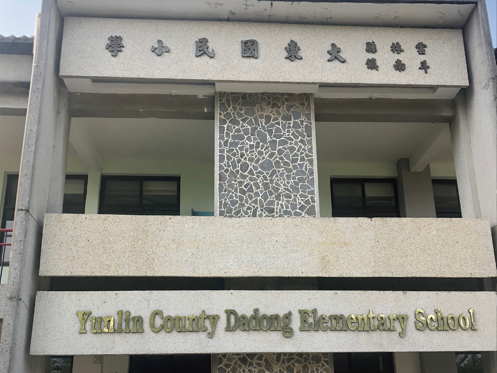

-
活動公告區
石龜景點

石龜溪小舖 Shigui Community shop 
簡介
|

石龜溪天后宮
歷史
資料來源 國家文化記憶庫 http://data.yunlin-memory.cool/taxonomy/term/4914
|
|---|---|
| 石龜溪小舖 | 石龜溪天后宮 |

石龜國小 
歷史 |

新大豐碾米廠 
歷史
資料來源 國家文化記憶庫 http://data.yunlin-memory.cool/data/CreativeWork/5690
|
|---|---|
| 石龜國小 | 新大豐碾米廠 |

石龜車站 Shigui Station 
歷史 資料來源 石龜車站. (2021, June 25). Retrieved from 維基百科，自由的百科全書： https://zh.wikipedia.org/wiki/石龜車站 |
石龜車站 Shigui Station 
歷史 |
|---|---|
| 石龜車站 | 新芳園醬油 |
斗南景點
| 
雲林縣大東國民小學 Yunlin Dadong Elementary School 
歷史 |
石龜溪天后宮
歷史 |
|
|---|---|---|
| 雲林縣大東國民小學 | 偶的家-戲偶文創園區 |